Simplifying a complex multi-step form for a business information exchange platform
to reduce drop-offs and modernize the user experience.
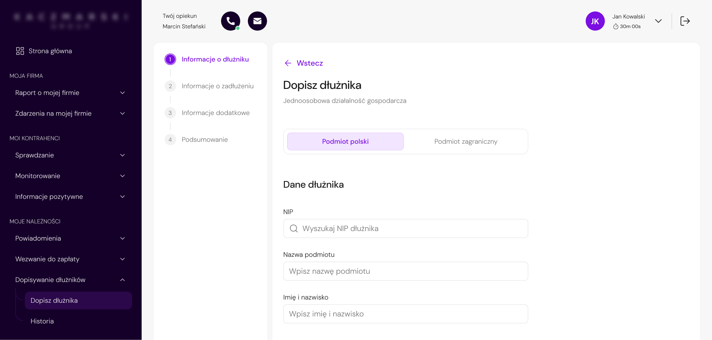
A web application for a business information bureau, used by entrepreneurs to verify and monitor business partners and manage receivables.
The project involved redesigning one of the key processes in the customer panel - the multi-step flow for registering a debtor.
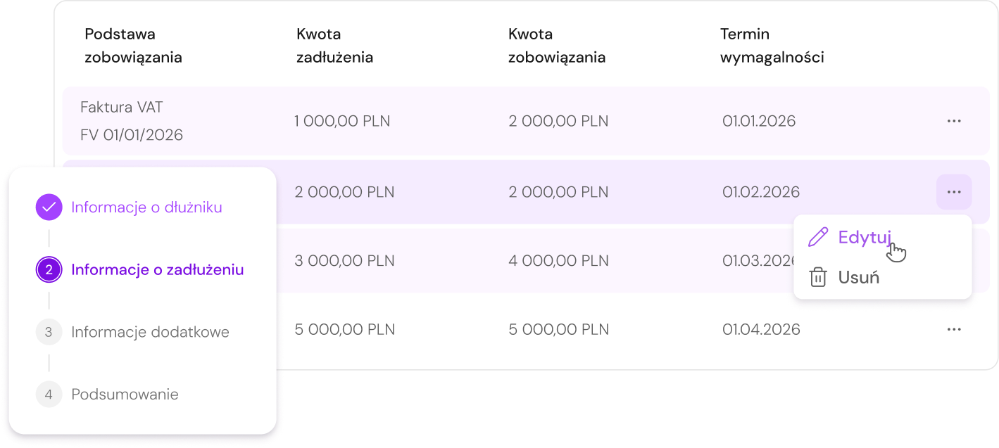
Reduce the number of users abandoning the form mid-process.
Limit the amount of information exposed at any one step.
Shorten the time needed to register a debtor end-to-end.
Make the multi-step structure clear and navigable.
Bring the customer panel up to current UX standards.
Give users a stronger sense of control and progress.
The project started with a detailed audit - going through the form multiple times in different configurations and use scenarios. A key element was early alignment with the PM regarding legal constraints.
Multiple walk-throughs of the form across different use scenarios, user paths, and configuration variants.
Analysis of user behavior patterns and recurring issues reported to the customer support center.
Mapping all field dependencies, validation rules, and legal constraints that could not be changed.
Early alignment sessions to define what could be removed, hidden, or had to remain unchanged.
Users were confronted with the full complexity of the process immediately. Rarely used optional fields visually dominated the form and made it harder to focus on the key data.
The structure reflected the underlying data model and system requirements, rather than the user's natural workflow and mental model of the task.
When completing company data, users expected the system to do more of the work - particularly around NIP lookup and automatic data population from external databases.
The debtor registration process was one of the most problematic flows in the entire customer panel.
The form had been developed incrementally over the years - without a consistent workflow logic and without the involvement of a UX Designer. As a result, from the very first step, the user was confronted with the full complexity of the process, a large number of fields, and an inconsistent data structure.
Feedback from the customer support center primarily pointed to: the overwhelming length of the form, difficulty in finding errors and lack of system support while entering data.
An additional challenge came from legal constraints - most fields were legally required and could not be completely removed from the process.
MAIN PAGE - BEFORE
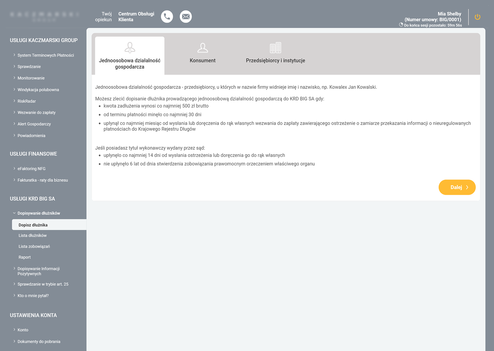
LOW INFORMATION SCENT
Lack of examples made debtor categories harder to distinguish.
LIMITED DECISION SUPPORT
The screen explained the rules, but not the value of using the service.
TEXT-HEAVY DECISION POINT
Key eligibility rules were buried in dense, documentation-style content.
WEAK ACTION HIERARCHY
The CTA feels disconnected from the choice.
STEP 1 - BEFORE
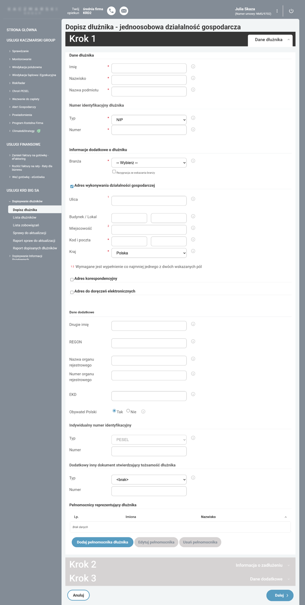
FALSE REQUIRED STATE
A non-mandatory field is marked as required, forcing users to opt out manually.
WEAK FIELD PRIORITIZATION
Required and optional fields had similar visual weight, making it harder to focus on the key data.
TOO MANY FIELDS AT ONCE
The first step exposed too much information upfront, making the form feel overwhelming from the start.
CONFUSING VALIDATION LOGIC
Numbered markers and footnotes made address requirements harder to understand than necessary.
UNHELPFUL HELPER ICONS
Tooltip icons appeared next to most fields, but often repeated the label instead of adding useful guidance.
ADDING DEBT DETAILS - BEFORE
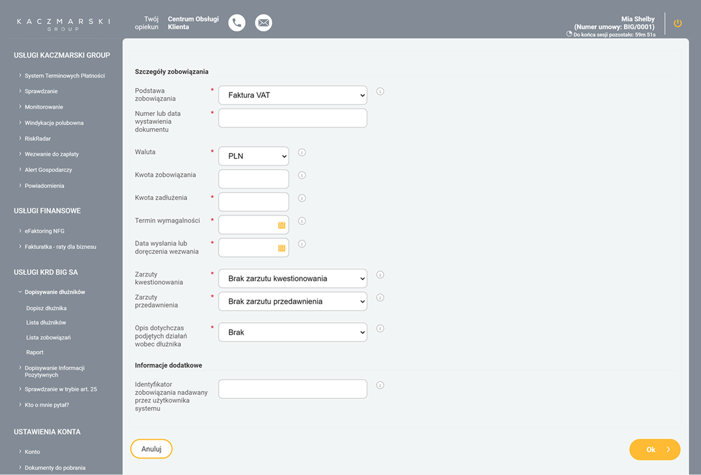
The process was rebuilt around clear steps and a stepper that guided the user through the form and limited the ability to move forward without completing the required data.
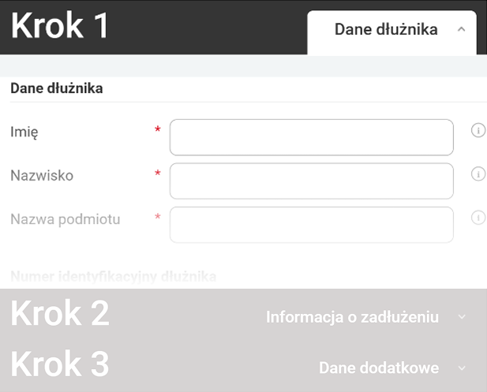
Due to legal requirements, most fields could not be removed. Instead of reducing complexity at the data level, the redesign limited the exposure of less important information — less frequently used fields were hidden under expandable section.
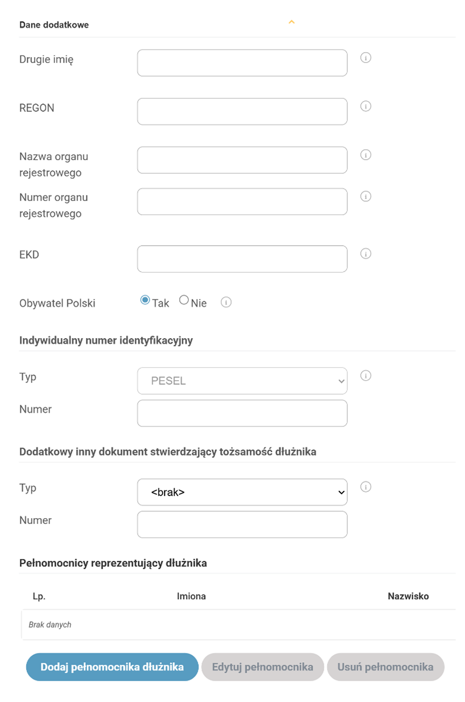
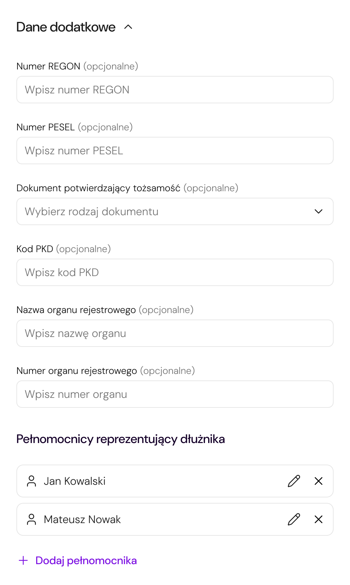
The NIP field was transformed into a search field integrated with external databases, allowing company data to be filled in automatically.
The search field replaces a standard text input.
Suggestion list from external databases, such as CEIDG or GUS.
Data such as company name, full name, addresses, and NIP are filled in automatically.
The structure of address fields was simplified by removing unnecessary dependencies between inputs and adding clearer data entry rules.
Adding obligations and representatives was moved from separate subpages into modals to reduce context switching and keep the user within the main flow.
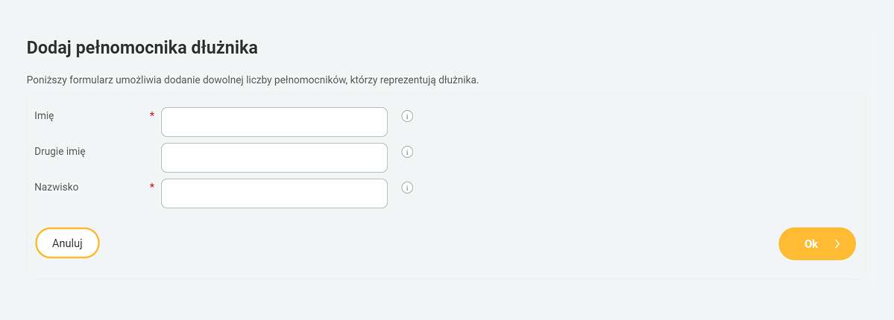
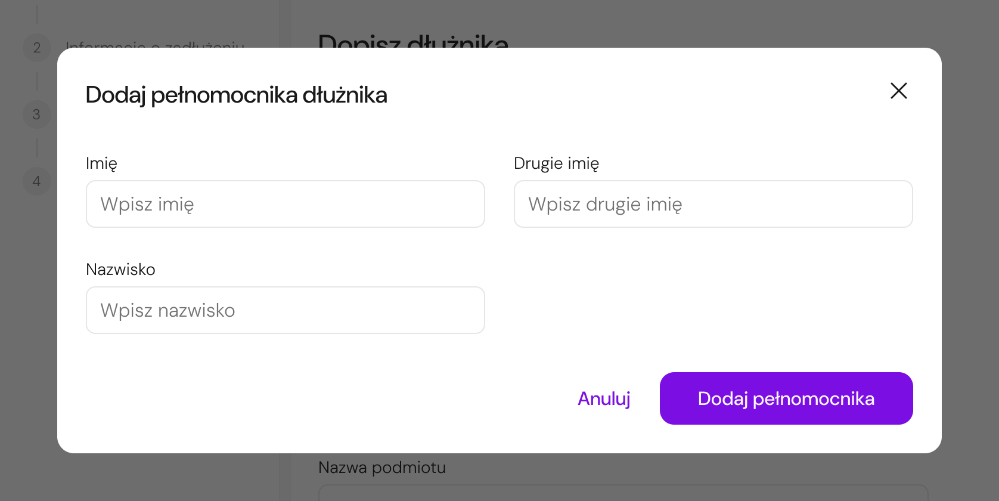
The redesigned flow focused on reducing exposed complexity, improving guidance, and keeping users in context throughout the process.
The start screen was redesigned to help users quickly identify the correct debtor type, understand the eligibility criteria, and begin the process with more confidence.
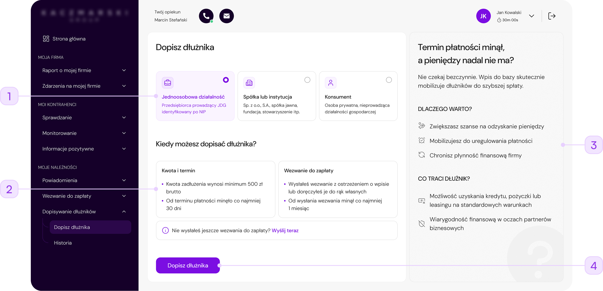
Replaced a text-heavy tab layout with visual cards that help users choose the right debtor type faster.
Key conditions were grouped into smaller content blocks, making it easier to understand when the service can be used.
A new supporting panel explains the benefits and consequences of adding a debtor, helping users understand the value of the service before starting.
The CTA was made more prominent and placed closer to the decision point to support a smoother start.
The first step was redesigned to reduce visual density, improve information hierarchy, and make the form feel more manageable without removing legally required data.
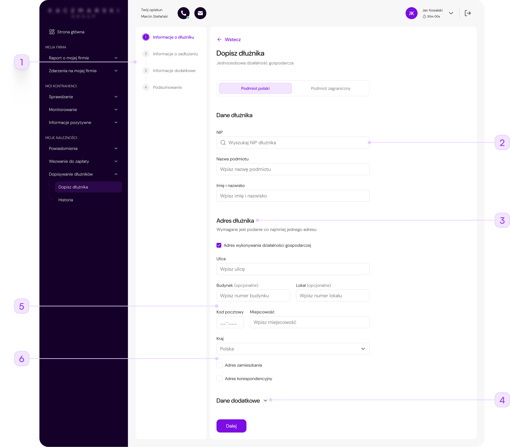
A visible stepper helped users understand where they were in the process and what was still ahead.
The NIP field was redesigned as a searchable input to support faster data entry and future autofill scenarios.
The form was reorganized into focused sections, helping users process one group of information at a time.
Less frequently used data was placed under an expandable section, reducing the amount of information exposed at once.
The redundant "Post office" field was removed, and a postal code placeholder was added to suggest the correct format and reduce input-related questions.
Unnecessary footnote-based validation was removed to make the address section easier to understand and reduce visual noise.
The debt details step was redesigned as an in-context modal to reduce navigation, preserve flow continuity, and make the interaction feel lighter.
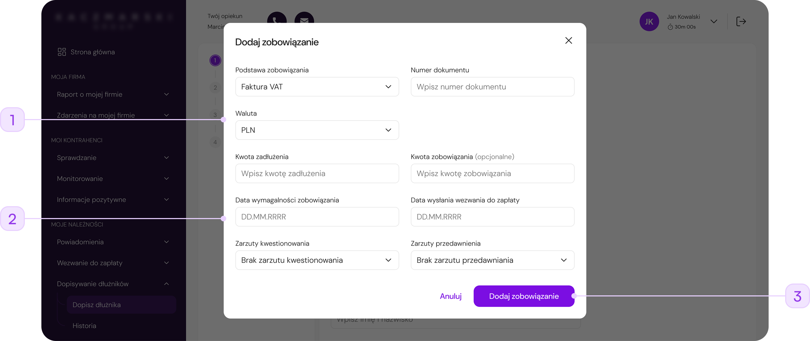
Debt details were moved from a full-page view into a modal, allowing users to complete the task without losing sight of the main debtor flow.
Required-field markers, helper icons, and heavy separators were reduced, making the form easier to scan.
The generic "OK" button was replaced with a specific action label, making it clearer what happens after submitting the modal.
The modal made this action feel shorter and less disruptive than opening a separate full-page step.
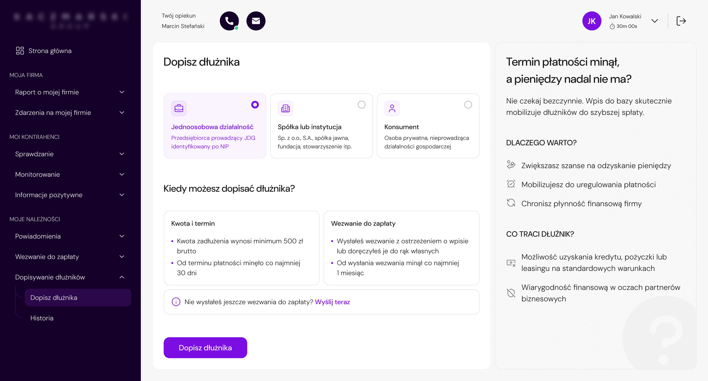
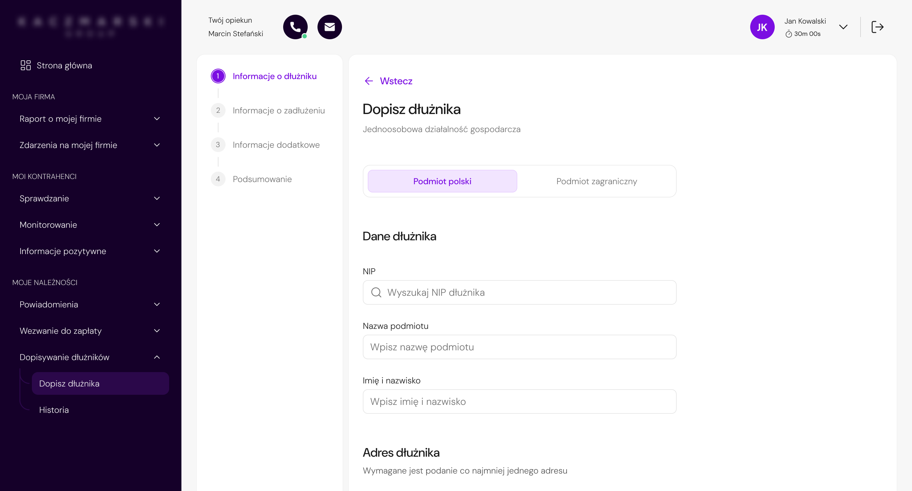
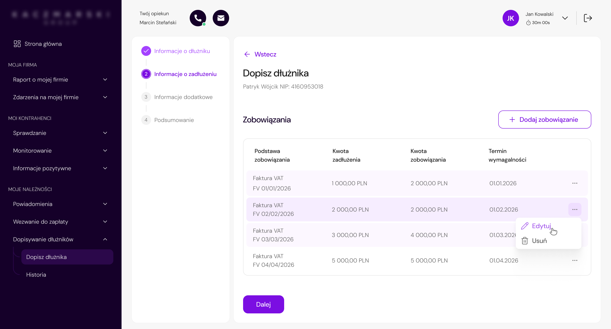
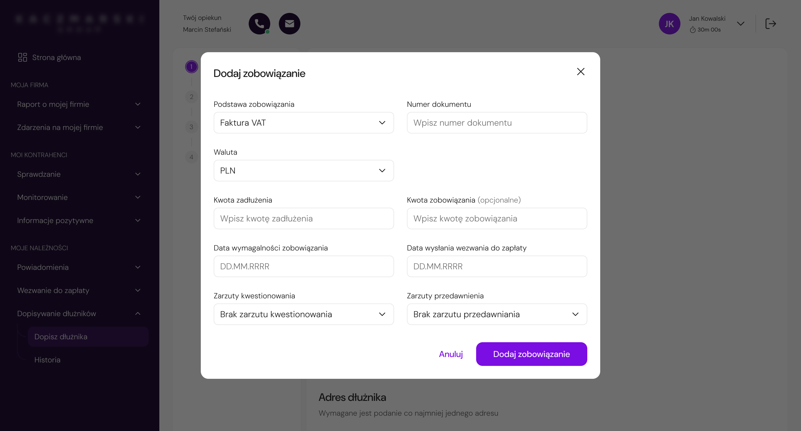
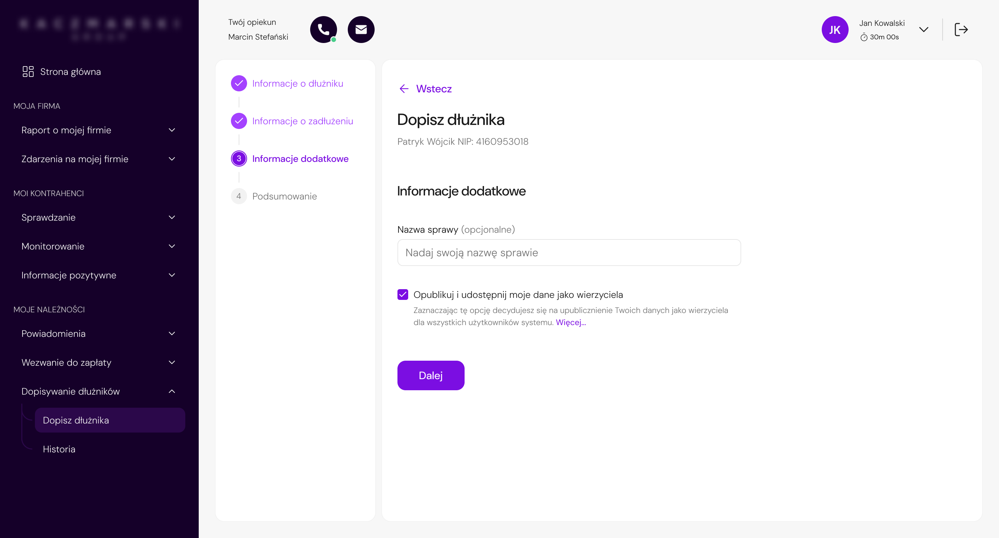
The project was prepared for phased implementation and handed over to the development team together with implementation estimates. Since the collaboration ended before launch, post-release metrics were not available.
Instead, the value of the redesign can be seen in how it addressed key friction points in a complex, regulation-driven workflow.
Reduced exposed complexity and step-by-step guidance made the process feel more manageable.
NIP search, autofill support, and simplified address input reduced manual data entry.
Legal requirements stayed in the process, but were structured in a more user-friendly way.
Reusable patterns for forms, steppers, validation, modals, and progressive disclosure supported future redesigns.
The project showed how challenging it can be to redesign systems that have been developed for years without a consistent UX strategy. Simplifying the experience does not always mean removing complexity - in many cases, it is more important to manage the exposure of information properly and guide the user through the process.
In hindsight, I would place greater emphasis on earlier business and legal alignment. In regulated systems, even small changes can significantly affect project scope and the number of iterations.
I would also like to conduct usability testing - even in a simplified, internal form. This would make it possible to validate assumptions faster and better assess the impact of the redesign on real user behavior before implementation.